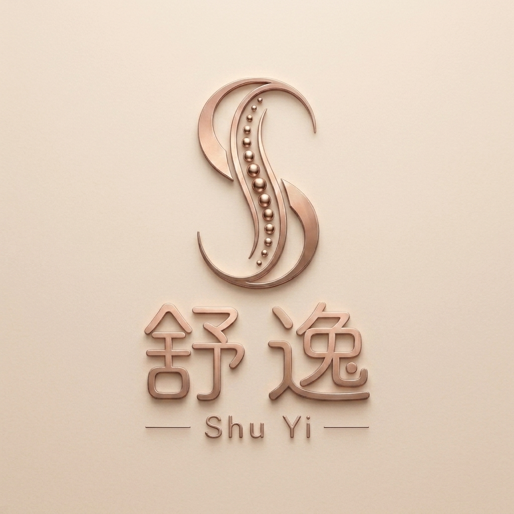
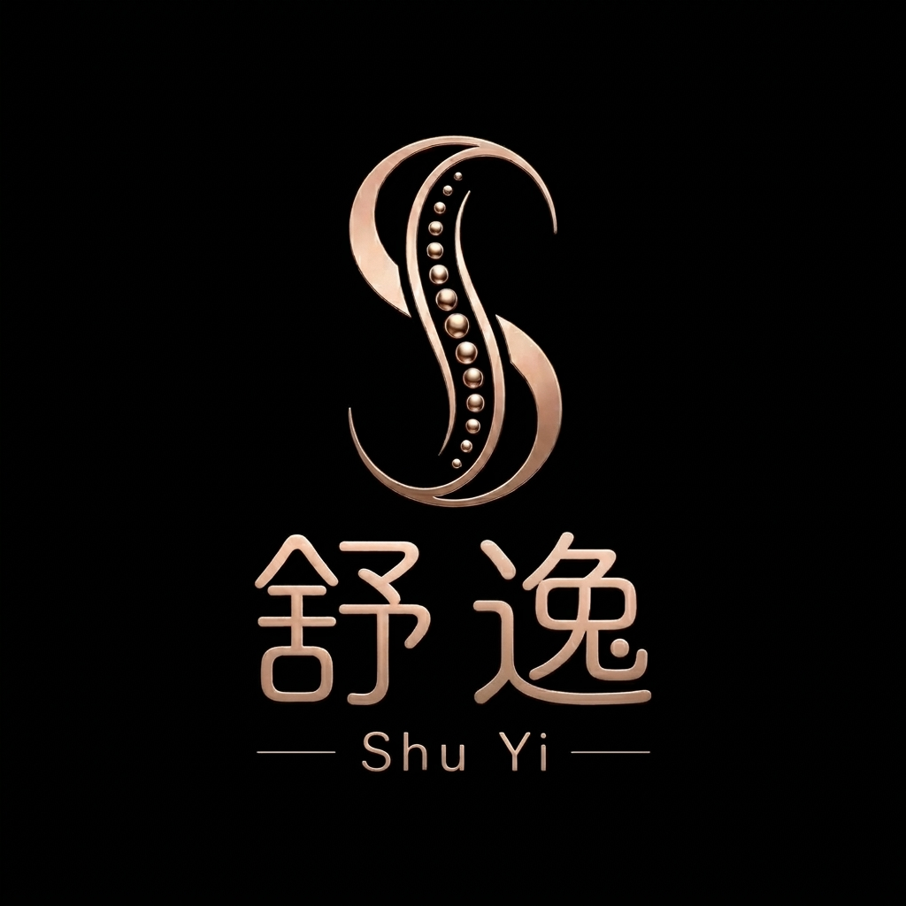

把身體
調回舒適的樣子
美式活化槍全身調理，搭配舒緩與個人化附加服務。不是按摩，是重新認識身體的節奏。
MOVE
WELL
LIVE
LIGHT
THE SHU YI WAY
不只放鬆，重新動起來
THE SHU YI JOURNAL
給生活一點新的情報
YOUR PLACE TO RESET


SHU YI美式活化槍全身調理，搭配舒緩與個人化附加服務。不是按摩，是重新認識身體的節奏。
MOVE
WELL
LIVE
LIGHT
THE SHU YI WAY
THE SHU YI JOURNAL
YOUR PLACE TO RESET